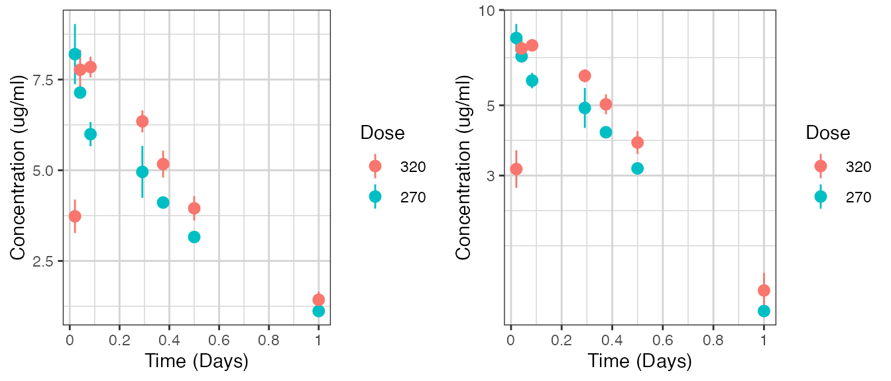
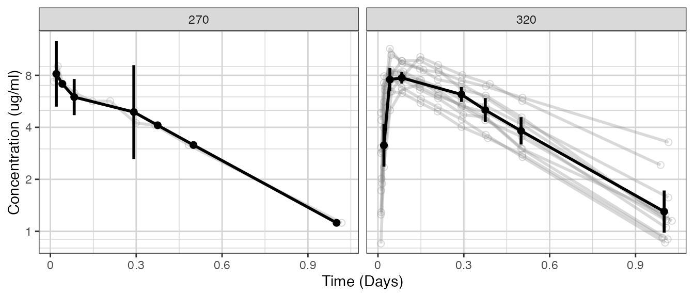
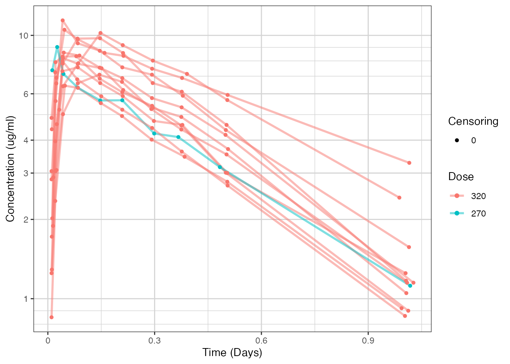
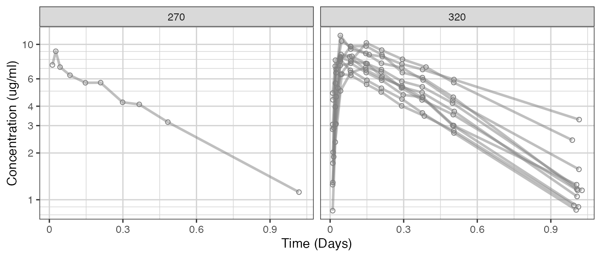
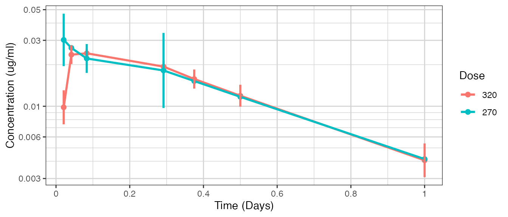
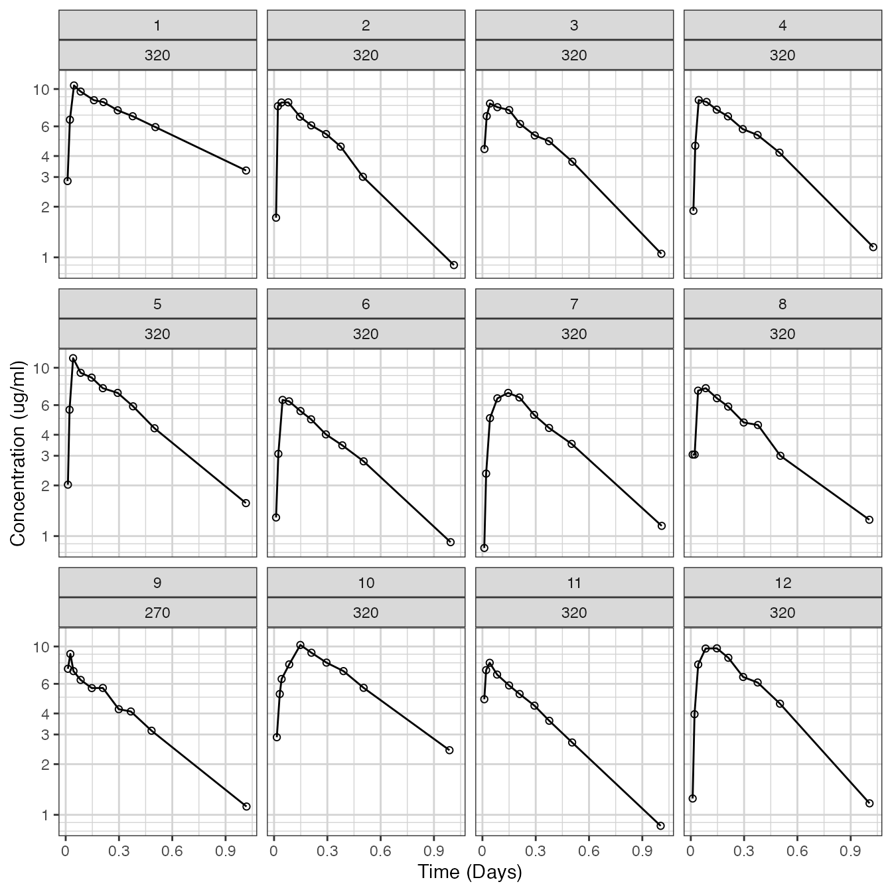
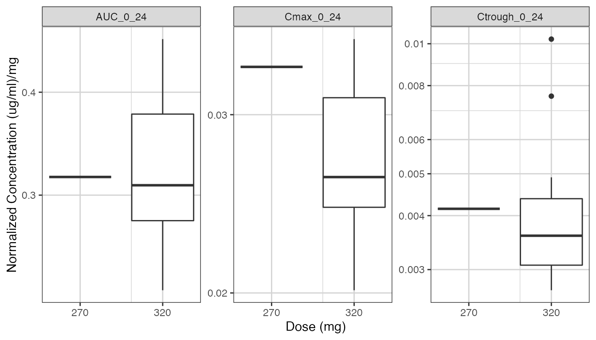
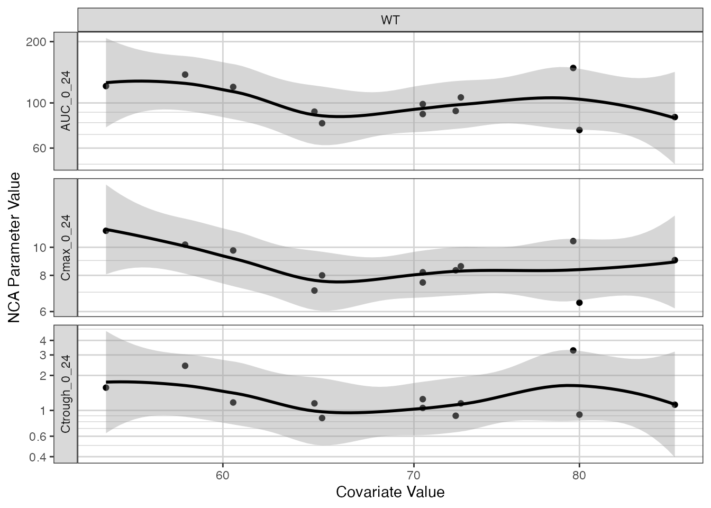

theoph.RmdMultiplying dose by weight to get a mg dosing.
# units of dataset
time_units_dataset <- "hours"
time_units_plot <- "days"
dose_label <- "Dose (mg)"
conc_label <- "Concentration (ug/ml)"
concnorm_label <- "Normalized Concentration (ug/ml)/mg"
# covariates in the dataset
covariates <- c("WT")
# load dataset
data <- nlmixr_theo_sd
# make sure that the necessary columns are assigned
# five columns are required: TIME, LIDV, CMT, DOSE, DOSEREG
data <- data %>%
mutate(ID = ID) %>% #ID column
group_by(ID) %>%
mutate(TIME = TIME, #TIME column name
NOMTIME = as.numeric(as.character(cut(TIME,
breaks = c(-Inf, 0.1, 0.7, 1.5, 4, 8, 10.5, 15, Inf),
labels = c( 0, 0.5, 1, 2, 7, 9, 12, 24)))),
EVID = EVID, # EVENT ID >=1 is dose, 0 otherwise
CYCLE = 1, # CYCLE of PK data
LIDV = DV, # DEPENDENT VARIABLE column name
CENS = 0, # CENSORING column name
CMT = CMT, # COMPARTMENT column here (e.g. CMT or YTYPE)
DOSE = signif(max(AMT) * WT, 2), # DOSE column here (numeric value)
# convert mg/kg (in dataset) to mg
DOSEREG = DOSE) %>% # DOSE REGIMEN column here
ungroup()
# convert DOSEREG to factor for proper ordering in the plotting
# add LIDVNORM dose normalized concentration for plotting
data <- data %>%
arrange(DOSE) %>%
mutate(LIDVNORM = LIDV / DOSE,
DOSEREG = factor(DOSEREG, levels = unique(DOSEREG)),
DOSEREG_REV = factor(DOSEREG, levels = rev(unique(DOSEREG))))
# define order of treatment factor
# for plotting the PK data
data_pk <- filter(data, CMT == 2, TIME > 0)
# NCA
NCA <- data %>%
filter(CMT == 2, NOMTIME > 0, NOMTIME <= 24) %>%
group_by(ID) %>%
summarize(AUC_0_24 = caTools::trapz(TIME, LIDV),
Cmax_0_24 = max(LIDV),
Ctrough_0_24 = LIDV[length(LIDV)],
DOSE = DOSE[1],
WT = WT[1]) %>%
tidyr::gather(PARAM, VALUE, -c(ID, DOSE, WT)) %>%
mutate(VALUE_NORM = VALUE / DOSE) %>%
ungroup()
check <- xgx_check_data(data,covariates)
#> Warning in xgx_check_data(data, covariates): Setting YTYPE column equal to CMT
#> Warning in xgx_check_data(data, covariates): Setting MDV column equal to as.numeric(EVID!=0)
#>
#> DATA SUMMARY
#> CONTINUOUS COVARIATES
#> NO CATEGORICAL COVARIATES
#> POSSIBLE DATA ISSUES - FIRST 6 RECORDS
#> The following columns contained missing values
#> :
knitr::kable(check$summary)| Category | Description | YTYPE | Statistic | Value |
|---|---|---|---|---|
| Patients | Number of Patients | - | 12 | 12 |
| MDV | Number of patients with zero PK or PD observations | all | 0 | 0 |
| MDV | Number of Missing Data Points (MDV==1 and EVID==0) | all | 0 | 0 |
| Dose | Number of non-zero doses | - | 12 | 12 |
| Dose | Number of zero doses (AMT==0) | - | 0 | 0 |
| Dose | Number of patients that never received drug | - | 0 | 0 |
| DV | Number of Data Points | 1 | 12 | 12 |
| DV | Number of Data Points | 2 | 132 | 132 |
| DV | Number of Data Points per Individual | 1 | min = 1, median = 1, max = 1 | 1 |
| DV | Number of Data Points per Individual | 2 | min = 11, median = 11, max = 11 | 11 |
| DV | Number of Data Points with zero value (DV==0) | 1 | 0 | 0 |
| DV | Number of Data Points with zero value (DV==0) | 2 | 9 | 9 |
| DV | Number of Data Points with NA (is.na(DV)) | 1 | 0 | 0 |
| DV | Number of Data Points with NA (is.na(DV)) | 2 | 0 | 0 |
| DV+TIME | Multiple measurements at same time | 1 | 0 | 0 |
| DV+TIME | Multiple measurements at same time | 2 | 0 | 0 |
| CENS | Number of Censored Data Points | 1 | 0 (0%) | 0 |
| CENS | Number of Censored Data Points | 2 | 0 (0%) | 0 |
| All Columns | Negative Values (number) | - | : | 0 |
| All Columns | Missing Values (number) | - | : | 0 |
| Data_Check_Issue | ID | TIME | DV | CENS | YTYPE |
|---|---|---|---|---|---|
| DV == 0 | 9 | 0 | 0 | 0 | 2 |
| DV == 0 | 2 | 0 | 0 | 0 | 2 |
| DV == 0 | 3 | 0 | 0 | 0 | 2 |
| DV == 0 | 4 | 0 | 0 | 0 | 2 |
| DV == 0 | 5 | 0 | 0 | 0 | 2 |
| DV == 0 | 6 | 0 | 0 | 0 | 2 |
knitr::kable(check$cts_covariates)| Covariate | Nmissing | min | 25th | median | 75th | max |
|---|---|---|---|---|---|---|
| WT | 0 | 54.6 | 63.575 | 70.5 | 74.425 | 86.4 |
knitr::kable(check$cat_covariates)
#> Warning in kable_pipe(x = structure(character(0), .Dim = c(0L, 0L), .Dimnames =
#> list(: The table should have a header (column names)|| || || ||
Summarize the data in a way that is easy to visualize the general trend of PK over time and between doses. Using summary statistics can be helpful, e.g. Mean +/- SE, or median, 5th & 95th percentiles. Consider either coloring by dose or faceting by dose. Depending on the amount of data one graph may be better than the other.
When looking at summaries of PK over time, there are several things to observe. Note the number of doses and number of time points or sampling schedule. Observe the overall shape of the average profiles. What is the average Cmax per dose? Tmax? Does the elimination phase appear to be parallel across the different doses? Is there separation between the profiles for different doses? Can you make a visual estimate of the number of compartments that would be needed in a PK model?
glin <- ggplot(data = data_pk, aes(x = NOMTIME,
y = LIDV,
group = DOSE,
color = DOSEREG_REV)) +
stat_summary() +
xgx_scale_x_time_units(time_units_dataset, time_units_plot) +
labs(y = conc_label, color = "Dose")
glog <- glin + scale_y_log10()
gridExtra::grid.arrange(gridExtra::arrangeGrob(glin, glog, nrow = 1))
For multiple dose studies, zoom in on key visits for a clearer picture of the profiles. Look for accumulation (if any) between first administered dose and steady state.
if (exists("data_pk_rich")) {
ggplot(data_pk_rich, aes(x = PROFTIME,
y = LIDV,
group = interaction(CYCLE,DOSE),
color = DOSEREG_REV)) +
facet_grid(~DAY_label, scales = "free_x") +
xgx_stat_ci() +
xgx_scale_x_time_units(time_units_dataset, time_units_plot) +
xgx_scale_y_log10() +
labs(y = conc_label, color = "Dose")
}
ggplot(data = data_pk, aes(x = TIME,
y = LIDV,
group = interaction(ID, CYCLE))) +
geom_line(size = 1, color = rgb(0.5, 0.5, 0.5), alpha = 0.3) +
geom_point(aes(color = factor(CENS), shape = factor(CENS)),
size = 2, alpha = 0.3) +
xgx_stat_ci(aes(x = NOMTIME, group = NULL, color = NULL)) +
facet_grid(.~DOSEREG) +
xgx_scale_x_time_units(time_units_dataset, time_units_plot) +
xgx_scale_y_log10() +
ylab(conc_label) +
theme(legend.position = "none") +
scale_shape_manual(values = c(1, 8)) +
scale_color_manual(values = c("grey50", "red"))
Use spaghetti plots to visualize the extent of variability between individuals. The wider the spread of the profiles, the higher the between subject variability. Distinguish different doses by color, or separate into different panels. If coloring by dose, do the individuals in the different dose groups overlap across doses? Dose there seem to be more variability at higher or lower concentrations?
ggplot(data = data_pk, aes(x = TIME,
y = LIDV,
group = interaction(ID, CYCLE),
color = factor(DOSEREG_REV),
shape = factor(CENS))) +
geom_line(size = 1, alpha = 0.5) +
geom_point() +
xgx_scale_x_time_units(time_units_dataset, time_units_plot) +
xgx_scale_y_log10() +
labs(y = conc_label, color = "Dose", shape = "Censoring")
if (exists("data_pk_rich")) {
ggplot(data = data_pk_rich, aes(x = TIME,
y = LIDV,
group = interaction(ID, CYCLE),
color = DOSEREG_REV,
shape = factor(CENS))) +
geom_line(size = 1, alpha = 0.5) +
geom_point() +
facet_grid(~DAY_label, scales = "free_x") +
xgx_scale_x_time_units(time_units_dataset, time_units_plot) +
xgx_scale_y_log10() +
labs(y = conc_label, color = "Dose", shape = "Censoring")
}
ggplot(data = data_pk, aes(x = TIME,
y = LIDV,
group = interaction(ID, CYCLE),
color = factor(CENS),
shape = factor(CENS))) +
geom_line(size = 1, alpha = 0.5) +
geom_point() +
facet_grid(.~DOSEREG) +
xgx_scale_x_time_units(time_units_dataset, time_units_plot) +
xgx_scale_y_log10() +
ylab(conc_label) +
scale_shape_manual(values = c(1, 8)) +
scale_color_manual(values = c("grey50", "red")) +
theme(legend.position = "none")
ggplot(data = data_pk, aes(x = NOMTIME,
y = LIDVNORM,
group = DOSEREG_REV,
color = DOSEREG_REV)) +
xgx_stat_ci() +
xgx_scale_x_time_units(time_units_dataset, time_units_plot) +
xgx_scale_y_log10() +
labs(y = conc_label, color = "Dose")
if (exists("data_pk_rich")) {
ggplot(data_pk_rich, aes(x = NOMTIME,
y = LIDVNORM,
group = interaction(DOSE, CYCLE),
color = DOSEREG_REV)) +
xgx_stat_ci() +
facet_grid(~DAY_label,scales = "free_x") +
xgx_scale_x_time_units(time_units_dataset, time_units_plot) +
xgx_scale_y_log10() +
labs(y = conc_label, color = "Dose")
}Plot individual profiles in order to inspect them for any irregularities. Inspect the profiles for outlying data points that may skew results or bias conclusions. Looking at the shapes of the individual profiles now, do they support your observations made about the mean profile (e.g. number of compartments, typical Cmax, Tmax)?
Plotting individual profiles on top of gray spaghetti plots puts individual profiles into context, and may help identify outlying individuals for further inspection. Are there any individuals that appear to have very high or low Cmax compared to others within the same dose group? What about the timing of Cmax? What about the slope of the elimination phase? Does it appear that any subjects could have received an incorrect dose?
ggplot(data = data_pk, aes(x = TIME, y = LIDV)) +
geom_line() +
geom_point(aes(color = factor(CENS), shape = factor(CENS))) +
facet_wrap(~ID + DOSEREG) +
xgx_scale_x_time_units(time_units_dataset, time_units_plot) +
xgx_scale_y_log10() +
ylab(conc_label) +
theme(legend.position = "none") +
scale_shape_manual(values = c(1, 8)) +
scale_color_manual(values = c("black", "red"))
Observe the dose normalized AUC over different doses. Does the relationship appear to be constant across doses or do some doses stand out from the rest? Can you think of reasons why some would stand out? For example, the lowest dose may have dose normalized AUC much higher than the rest, could this be due to CENS observations? If the highest doses have dose normalized AUC much higher than the others, could this be due to nonlinear clearance, with clearance saturating at higher doses? If the highest doses have dose normalized AUC much lower than the others, could there be saturation of bioavailability, reaching the maximum absorbable dose?
if (!exists("NCA")) {
warning("For PK data exploration, it is highly recommended to perform an NCA")
} else {
ggplot(data = NCA, aes(x = DOSE, y = VALUE_NORM)) +
geom_boxplot(aes(group = DOSE)) +
geom_smooth(method = "loess", color = "black") +
facet_wrap(~PARAM, scales = "free_y") +
xgx_scale_x_log10(breaks = unique(NCA$DOSE)) +
xgx_scale_y_log10() +
labs(x = dose_label, y = concnorm_label)
}
if (!exists("NCA")) {
warning("For covariate exploration, it is highly recommended to perform an NCA")
} else {
NCA_cts <- NCA[, c("PARAM", "VALUE", check$cts_covariates$Covariate)] %>%
tidyr::gather(COV, COV_VALUE, -c(PARAM, VALUE))
NCA_cat <- NCA[, c("PARAM", "VALUE", check$cat_covariates$Covariate)] %>%
tidyr::gather(COV, COV_VALUE, -c(PARAM, VALUE))
if (nrow(check$cts_covariates) >= 1) {
gg <- ggplot(data = NCA_cts, aes(x = COV_VALUE, y = VALUE)) +
geom_point() +
geom_smooth(method = "loess", color = "black") +
facet_grid(PARAM~COV,switch = "y", scales = "free_y") +
xgx_scale_x_log10() +
xgx_scale_y_log10() +
labs(x = "Covariate Value", y = "NCA Parameter Value")
print(gg)
}
if (nrow(check$cat_covariates) >= 1) {
gg <- ggplot(data = NCA_cat, aes(x = COV_VALUE, y = VALUE)) +
geom_boxplot() +
facet_grid(PARAM~COV, switch = "y", scales = "free_y") +
xgx_scale_y_log10() +
labs(x = "Covariate Value", y = "NCA Parameter Value")
print(gg)
}
}